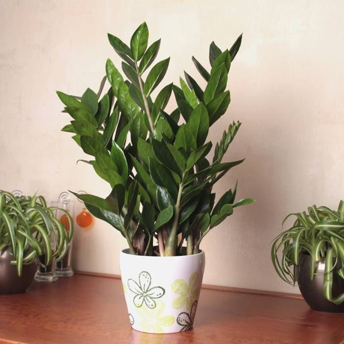

Zamioculcas

Description
Zamioculcas is a genus of flowering plants in the family Araceae,
containing the single species Zamioculcas zamiifolia.
It is a tropical herbaceous perennial plant, native to eastern Africa
including Kenya, KwaZulu-Natal, Malawi, Mozambique,Tanzania, and Zimbabwe.
Common names include Zanzibar gem, ZZ plant, Zuzu plant, aroid palm,
eternity plant and emerald palm.
It is grown as a houseplant mainly for its attractive glossy foliage and
easy care. Zamioculcas zamiifolia is winter hardy to USDA Zones 9-10.
Cultivation
Temperature
-
It may survive outdoors as long as the temperature does not fall below
around 15 °C (60 °F); though best growth is between 18 and 26 °C (64 and
79 °F), while high temperatures give an increase in leaf production. In
temperate regions, it is grown as a houseplant. Overwatering may destroy
this plant through tuber rot. Bright, indirect light is best; some sun
will be tolerated.
Propagation
-
Zamioculcas zamiifolia may be propagated by leaf cuttings: typically,
the lower ends of detached leaves are inserted into a moist, gritty
growing medium, and the pot is enclosed in a polythene bag. Though the
leaves may well decay, succulent bulb-like structures should form in the
bag, and these may be potted up to produce new plants. The process may
take upwards of one year. The plant can also be propagated by division.
Light
-
Due to its strong green leaves, it is especially suitable for open,
bright rooms.When grown indoors, the plant prefers bright indirect light
but will tolerate low light conditions. However, lower light is not
optimal for an extended period of time. Insufficient amounts of sunlight
can result in leaves lengthening and/or falling off, yellowing
(chlorosis), and generally uneven or disproportionate growth as the
plant stretches towards a light source. When grown outdoors, Zamioculcas
zamiifolia prefers part shade to full shade.
Soil
-
The substrate used must be well-drained and contain nutrients. It can be
composed of a mixture of tanned ox manure, washed river sand and red
earth (1:1:1). For indoor plants, use a well-drained potting soil mix.
Water
-
Zamioculcas zamiifolia roots are rhizomatous and have the ability to
store moisture, thus aiding the plants in their drought resistance. The
plants like regular waterings, but the soil should be allowed to dry out
between waterings.
Description
Growth pattern
-
It is an herbaceous perennial growing to 45-60 centimetres (18-24 in)
tall, from a stout, underground, succulent rhizome. It is normally
evergreen but becomes deciduous during drought, surviving drought due to
the large potato-like rhizome that stores water until rainfall resumes.
-
The most visible "branches" are actually smooth, shiny, dark green,
pinnately compound leaves. These are 40–60 cm (16–24 in) long, with
swollen, succulent petioles and 6–8 pairs of leaflets, each 7–15 cm (3–6
in) long. Zamioculcas zamiifolia grows slowly, reaching heights and
widths ranging from 2 to 4 feet (0.61 to 1.22 m).
Inflorescence
-
The flowers are produced in a small, bright yellow to brown or bronze
spadix 5–7 cm (2–3 in) long and wrapped in a yellow-green spathe; the
whole inflorescence is partly hidden among the branch bases. Flowering
is from midsummer to early autumn.
Leaves
-
Zamioculcas zamiifolia contains an unusually high water contents of
leaves (91%) and petioles (95%) and has an individual leaf longevity of
at least six months, which may be the reason it can survive extremely
well under interior low light levels for four months without water.